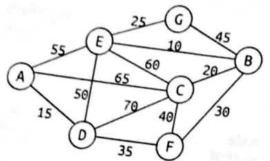

GVertex do not have the fields discover, finish and inDegree (all the other ones are going to be useful).Modify the previous program by adding an implementation of the Bellman-Ford algorithm from section 7.9, and letting the user specify the source vertex. The implementation using at least one improvement of the algorithm described on its Wikipedia page.
Consider the following undirected graph:
